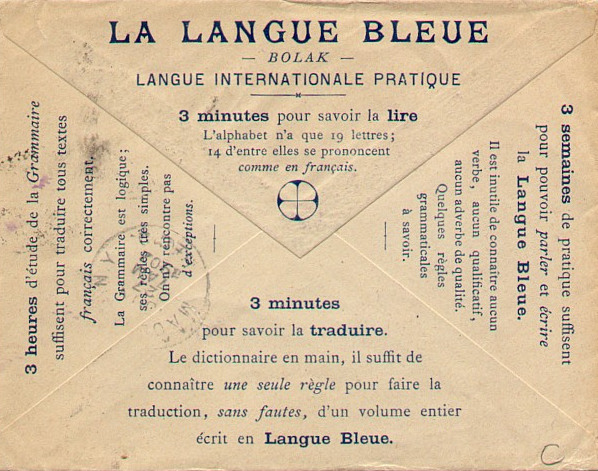
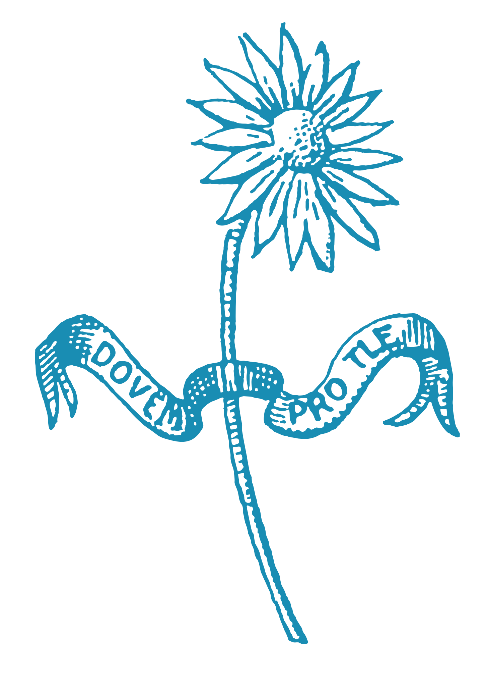

The Daisy Rule is so called because of the custom in French of pulling the leaves off a daisy to determine the degree to which one is loved by one's partner, similar to the '(s)he loves me, (s)he loves me not' custom in English.

Dovem pro tle
The introductory grammar that follows is based on the standard work La Langue Bleue which runs to several hundred pages. Obviously this treatment cannot be as comprehensive as the original, but Bollack was a bit pedantic in the way he expressed things, so there is less left out than one might be led to fear. This is a revised guide based on the work of Ed. Robertson from 1998.
Mea per boned srare geч fasteч an prif trased ama.
3 minutes pour savoir la lire
Bolak uses a 19 letters, and has no synonyms. The Ч is taken from the Cyrillic alphabet and is the same sound as the English, or Spanish, ch. The letters C, H, J, Q, W, X, Y, and Z are not used in Bolak:
A, B, Ч(ch), D, E, F, G, I, K, L, M, N, O, P, R, S, T, U, V.
It is based around the idea of Daisy Rule, Margueritation, the vowels a, e, i, o can be prefixed to any noun to express degrees of that concept, it allows to express nuances without learning separate words. If we take the Bolak root lov(love), the 5 vowel affixes can be used to form other words as follows:
- alov indifference, lack of love
- elov passion, exhuberant love
- ilov worship/idolatry, paroxysmal love
- olov inclination, doubting love
- ulov reciprocal love

3 heures d'étude de la Grammaire
In Bolak, every grammatical category (noun, verb, etc.) has a distinctive shape, so you can recognize a word's function instantly by looking at it. The shape of a word tells you its grammatical role:
| Type | Shape | Example |
|---|---|---|
| Small Words | max 3 letters | nu (not), ku (that), si (yes), no (no) |
| Nouns | 3+ letters, ends in consonant (not ч or d) | lov (love), pan (bread), kval (horse) |
| Verbs | noun root + tense vowel | lovi/lovo/love/lova |
| Adjectives | noun root + vowel + d | lovid (loving) |
| Adverbs | end in -ч | loviч (lovingly), moч (very) |
The small words are composed of a maximum of 3 letters. If composed of 3 letters, they must not end in a consonant. They perform 4 functions in the language: interjections, framework words, connectors and designators.
1. Interjections are composed of one vowel, or the same vowel doubled. The doubled forms express the opposite of their single equivalents:
- a expresses absence
- e exhuberance or encouragement
- i paroxysm or extreme
- o doubt or warning
- u equanimity or consent
- aa resignation, disgust
- ee condemnation
- ii pain, suffering
- oo appeal, request, threat
- uu repulsion, annoyance, fear
2. Framework words are made of two different vowels, or one/two consonants followed by a -u. Let us take the sentence give me bread, and its Bolak translation et givo pan, in the context of a speaker of French conversing with a speaker of English, using Bolak. Suppose the French speaker forgets that the Bolak for bread is pan. In this unlikely example, he or she could say:
- Et givo ou 'pain' give me what I call 'pain'
- Et givo iu 'bread' give me what you call 'bread'
The other two words in this group are:
- au used to mark a proper name
- eu used to mark a technical term
This leaves 12 other possible combinations of two different vowels. Four are used as general purpose substitution words, a bit like 'je' in Esperanto.
- io can be used to substitute for any preposition, and
- oi for any conjunction.
- ea can be used to replace any article, adjective or pronoun in the singular, and
- ae in the plural.
The other 8 are used as optional markers of verbal aspect or mood.
- oa to start to, to be about to
- eo to finish, to have just
- ia to intend to
- oe to have to, to be obliged to
- ai to wish to, to be inclined to
- ei to be able to, to be possible to
- ie to do frequently or regularly
- ao to do rarely or intermittently
There are 45 permitted combinations of the other form of framework words (Cu or CCu). Of these the most useful are:
- nu negative me nu lovi I do not love
- du interrogative me du lovi? Do I love?
- tnu int. neg. me tnu lovi? Do I not love?
- ku subordinate … ku me lovi … that I love
- knu sub. neg. … knu me lovi … that I do not love
- su reflexive me su lovi I love myself
- snu refl. neg. me snu lovi I do not love myself
The others are indispensible words which can be used free-standing or as prefixes in word-formation.
- ru again, re-
- pu arch-, chief-
- чu vice-, sub-
- fku anti-, contra-
- pru ante-, pre-, ex-
- plu poly-
- smu semi-, hemi-
- sku -ish
- kvu eu-
- mu mal-, caco-
me du snu oa ru lovo?
do I not begin to love myself again?
3. Connectors are for things such as prepositions and conjunctions, the form of this group of words comprises two or three letters including one consonant and one or both of the vowels I and O.
The basic prepositions include ib above, oч below, og behind, ik in front of, ot outside of, in in, il around, ol beside. These can be modified to express motion towards or from by the addition of -i or -o respectively: ogo from behind, ini into etc.
govo Paris
to go to Paris
Some important conjunctions are ki with, spi towards, pi for, it and and or or. Two other words which have the same phonotactic shape as this group are si yes and no no.
4. Designators are small words of two or three letters which have a form like that of the Connectors, but are composed of a consonant and one or both of A or E, instead of I or O. There are six kinds: relative, interrogative/exclamatory, personal, possessive and personal. Their meanings are listed as Singular/Plural:
- ra re who (relative)
- ka ke who? (interrogative)
- ak ek who! (exclamatory)
- ag age this, these
- af afe that, those
- an ane one, several
- at ate each, every, all
- ad ade of the
- al ale to the
The personal designators, however, do not change according to whether singular or plural, and there are different consonants at the beginning for all of the personal pronouns:
- me I
- te/ve you(sing.)
- se he
- le she
- чe it
- ne we
- pe/ge you(plur.)
- be they(masc.)
- fe they(fem.)
- de they
Some of these cases are also used with relative and interrogative designators. The possessive designators are derived from the personal pronouns, with the ending -ea neing used for the singular and -ae for the plural, e.g. mea/mae my (sing./plur.). Personal designators have a number of cases in Bolak:
- Nominative me I
- Accusative ma me
- Dative ama to me
- Ablative ema from me
- Vocative em me!
- Emphatic eme myself
The indefinite designators are formed from A followed by a consonant with the plural formed by adding -E, as in the demonstratives above:
- ab/abe such a/such
- am/ame the same
- ap/ape any
- as/ase a certain/certain
- av/ave the other(s)
The majority are formed from two consonants ending in -A in the singular and -E in the plural. Some of these a singular and no plural, and others a plural and no singular:
- spa each
- fke several
- tsa a little of
- fle few
- mra not a
- tle every/everybody
- kla/kle somebody/some people
- ksa/kse whichever
- sfa/sfe someone else/other people
- psa/pse one another
- fna/fne one or the other(s)
- tna/tne neither one nor the other(s)
- kva/kve whatever/whatever things
Et nu maki sfa, ska te nu vili ku sta maki ad ete
Do not do to another what you would not want someone to do to you
3 semaines pour parler et écrire
The granmots of Bolak convey the bulk of the semantic content. The form of these words is 3 letters or greater. If composed of only 3 letters, the last of these must be a consonant. There are 4 types of granmots: nouns & numbers, verbs, adjectives and adverbs. Normally, for all of these, the root word is the noun. Noun roots can be transformed into other parts of speech by the addition of various endings. Endings can then be added on to each of these cardinal numbers:
- -am (collective), e.g.
- venam unity
- dovam duality, duo
- teram trinity, trio
- -em (ordinal), e.g
- venem first
- dovem second
- terem third
- -ip (multiplication)
- venip single
- dovip double
- terip triple
- -om (division)
- venom whole
- dovom half
- terom third
- -erl (no. of kinds)
- venerl one kind of
- doverl two kinds of
- tererl three kinds of
- -olt (no. of times)
- venolt once
- dovolt twice
- terolt thrice
1. Nouns in Bolak must in their root forms begin and end with one or two consonants and end with one or two consonants. They cannot end inч or d. Normally these roots are one syllable in length. There are also a number of nouns which have more than one syllable, but these must not contain any affixes which are used in word formation. Bollack regarded the number of affixes used in agglutinative conlangs as confusing. For this reason the two syllable word sigar (cigar) is allowed because there is no suffix -ar in Bolak.
However a two syllable root ending in a suffix that was used, e.g. -or or -ort would not be permitted. The ending -or is used to indicate the agent associated with the root, e.g.:
- spil game
- spilor player
The ending -ort is used to indicate the place associated with the root:
- pan bread
- panort bakery
The suffix -u is used to form the plural of nouns while the prefix u- is used to form the feminine. Nouns in Bolak are not assumed to be masculine, and there also a masculine prefix stu-. Thus:
- kval horse
- ukval mare
- stukval stallion
Nouns referring to familial or social relationships have separate words for the male and female equivalents:
- per father
- mer mother
- lonk uncle
- tant aunt
- fem woman
- man man
In the event of the learner not remembering the Bolak word for the the feminine of the pair, the possibility of using the feminine prefix together with the male word is explicitly permitted. What the learner is supposed to do in the event of forgetting the male word is not stated.
The suffix -in can be used to refer to a female who acquires a title by virtue of marriage, e.g.:
- reks king
- reksin queen (consort)
As opposed to: kvin queen (in her own right), there is no masculine equivalent for this. Nouns can be combined with various framework words mentioned earlier, e.g.:
- bisp bishop
- bu bisp archbishop
- gon angle
- plu gon polygon
- lov love
- fku lov hate
The operation of the Daisy Rule prefixing nouns with a-, e-, i-, or o- has already been mentioned. The augmentative and diminutive suffixes are -as and -et respectively. The affix -an can be used to indicate the inhabitant of a place.
Compound nouns can be formed by joining two noun roots with a -u- between them. The headword comes last as in English, Chinese, Hungarian, German etc., e.g.:
- kafumilv coffee mill (kaf: coffee, milv: mill)
- dormukar sleeping car (dorm: sleep, kar: car)
- noksuknis night shirt (noks: night, knis: shirt)
- sopuspon soup spoon (sop: soup, spon: spoon)
Proper nouns can be used to qualify a headword as a separate word and not joined by a preposition: Bolak ditort Bolak publishing house
The subject noun always goes before the verb. A vocative noun always goes at the beginning of a sentence, as a separate clause, then followed by a vocative pronoun. Object nouns follow the verb. Any indirect object complement follows the direct object, and if there is more than one indirect object, these follow in decreasing order of interest.
2. Verbs are formed from the noun in Bolak by adding the appropriate tense affixes. There are four simple tenses:
- Eternal lovi to love
- Present lovo to be loving
- Past love to have loved
- Future lova to be going to love
Verbs can of course be formed from roots where the Daisy Rule has operated, e.g. ilovi, to worship. Verbs are preceded by their subject noun or pronoun and are invariable for person and number.
The simple tenses can be modified by prefixing u- before the verb to provide their perfect or anterior equivalents: me lova I shall love, me ulova I shall have loved. The grammar does not state whether this u- is to be added before or after the operation of the Daisy Rule.
The passive voice is created by inserting a -u- between the root and the tense ending: me lovua I shall be loved, me ulovua I shall have been loved.
What Bollack calls the reflexive voice is formed by inserting the reflexive particle: me su lovi I love myself.
What is called the subordinate mood is simply formed by using ku or knu for positive and negative subordination respectively.
Чe nanko knu me spiko.
It is necessary that I should not speak.
The imperative is formed by putting the pronoun into the vocative:
- te komo you come
- et komo come!
- em komo let me come! etc.
Because verbs can be freely formed from nouns the question may sometimes arise of what the meaning is of the verb thus formed. The following three possibilities of meaning can be tried in the following order of precedence:
- In the state of, or having the root noun.
- Accomplishing the root noun.
- To make use of the root noun.
Examples of each of these are:
- 1. bel beauty beli to be beautiful
- 2. bark embarkation barki to embark
- 3. bint string binti to tie up
3. Adjectives are formed from noun roots by adding a vowel and -d. This vowel varies according to ideas of tense, so the word may also be regarded as the verb plus a participial ending, e.g.:
- lovid loving (in general)
- lovod loving (at the moment)
- loved having loved
- lovad going to love
Attributes used predicatively can be translated by verbal expressions: me lalgo I am ill. There is no need to say: me sero lalgod.
Attributives follow the noun they qualify. Degrees of comparison are provided by the Daisy Rule:
- ipraved (of) the bravest (of)
- epraved (ku) braver (than)
- upraved (ku) as brave (as)
- opraved (ku) less brave (than)
- apraved (of) the least brave (of)
4. Adverbs always end in -ч, and are the adverbial equivalent of the attributives: loviч lovingly (in general) etc. There are also a number of basic modifiers, e.g. moч (very), paч (not very) and many more.
If modifiers are used with a verb, they are placed after the verb, but if they are modifying an attributive or another modifier, they are placed before the word they modify.
Vocabulary Summary
| Bolak | Meaning | Bolak | Meaning |
|---|---|---|---|
| lov | love | por | fear |
| pan | bread | sop | soup |
| kaf | coffee | kval | horse |
| dos | dog | spil | game |
| bel | beauty | bark | embarkation |
| bint | string | dorm | sleep |
| reks | king | kvin | queen |
| per | father | mer | mother |
| man | man | fem | woman |
| lonk | uncle | tant | aunt |
| noks | night | knis | shirt |
| gon | angle | milv | mill |
| seri | to be | reru | brother |
| givo | to give | govo | to go |
| komo | to come | spiko | to speak |
| maki | to do/make | vili | to want |
| nanko | it is necessary | lalgo | to be ill |
| savi | to know | kar | car |
Numbers are a special kind of noun, they are placed before the noun they relate to.
- nol, zero
- ven, one
- dov, two
- ter, three
- far, four
- kel, five
- gab, six
- чep, seven
- lok, eight
- nif, nine
- dis, ten
- 11, diven
- 12, didov
- 20, dovis
- 21, dovis ven
- 30, teris
- 100, son
- 101, son ven
- 1,000, mel
- 9,200, nifmel dovson
- 10,000, dismel
- 100,000, sonmel
- 1,000,000, mlon
- 1,000,000,000, mlar
Terson nifis venmel farson lokis dov
391,482
Months of the year
- Ventag, january
- Dovtag, february
- Tertag, march
- Fartag, april
- Keltag, may
- Gabtag, june
- Чeptag, july
- Loktag, august
- Niftag, september
- Distag, october
- Diventag, november
- Didovtag, december
Colors
- vet, white
- ret, red
- чei, yellow
- ner, black
- silv, silver
- lor, gold
- vert, green
- mnivr, vermilion
- narn, orange
- pink, pink
- mron, brown
- flet, purple
- mogn, mahogany
- slest, blue
Dovem pro tle
Second (language) for everybody
incoming: identity